Analiza rješenja · JOI Spring Camp 2019 · Dan 3
Označeni gradovi
O ovom članku
Tekst je prijevod službene japanske prezentacije rješenja, preoblikovan u članak. Slajdovi su ugrađeni kao slike; natpis pod svakim slajdom je prijevod teksta na njemu. Dijelovi označeni kao trenerska napomena nisu u izvornoj prezentaciji — dodani su da popune korake koje slajdovi preskaču ili samo skiciraju.
Slajdovi
Zadatak, E = 1, E = 2
izvorni slajdovi 1–5
-
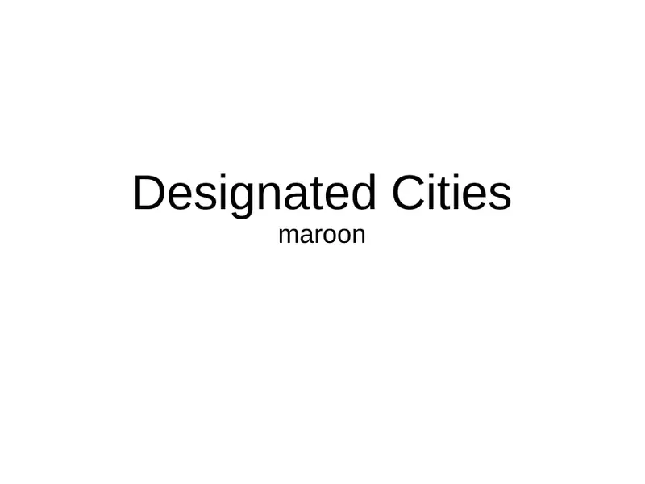
1Naslov; maroon. -
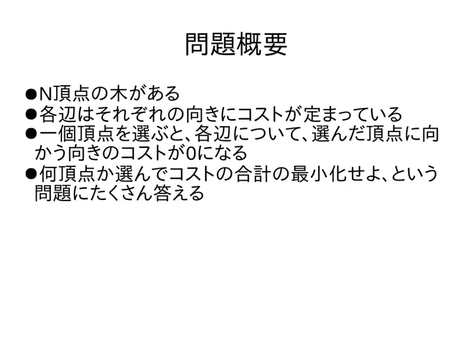
2Stablo, dvije cijene po bridu; odabir vrha nulira cijene traka prema njemu; minimiziraj zbroj za razne brojeve odabranih. -
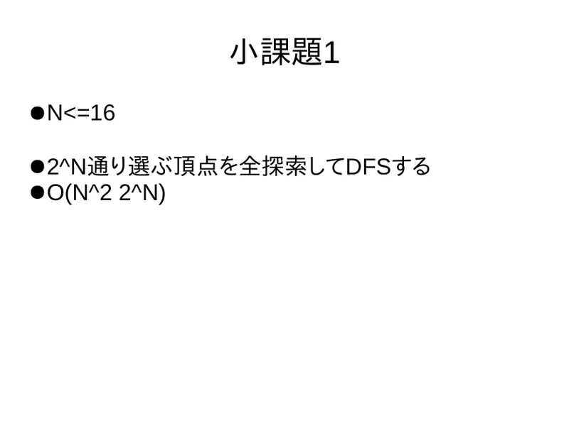
3$N\le16$: svih $2^N$ podskupova, DFS; $O(N^22^N)$. -
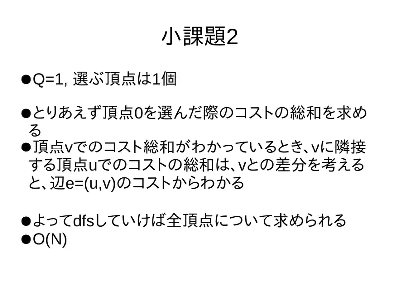
4$E=1$: izračunaj za vrh 0, pa susjedni vrh razlikuje se samo u bridu između — DFS, $O(N)$. -
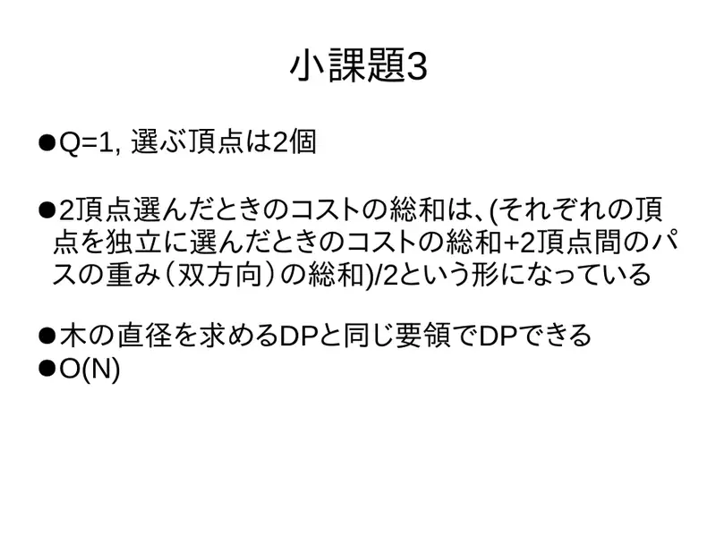
5$E=2$: cijena para = (zbroj pojedinačnih + težina puta u obje strane)/2 [u terminima asfaltiranog]; DP kao za dijametar, $O(N)$.
← → tipke ili klik na sliku
Podzadatak 4 17 bodova
Koraci algoritma
Greedy po listovima
izvorni slajdovi 6–11
-
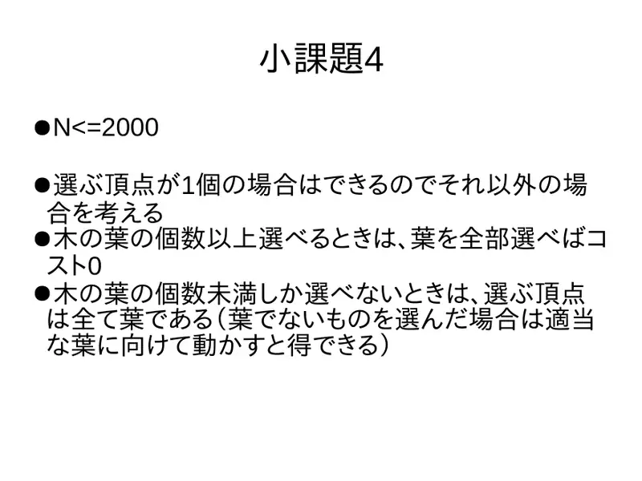
6$E\ge$ listova ⇒ 0; inače svi odabrani su listovi (ne-list pomakni prema listu). -
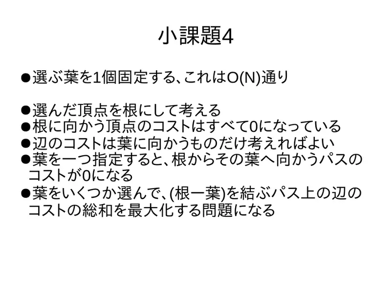
7Fiksiraj jedan list ($O(N)$ izbora), ukorijeni; trake prema korijenu su 0; odabrani list nulira put korijen–list; maksimiziraj pokrivenu težinu. -
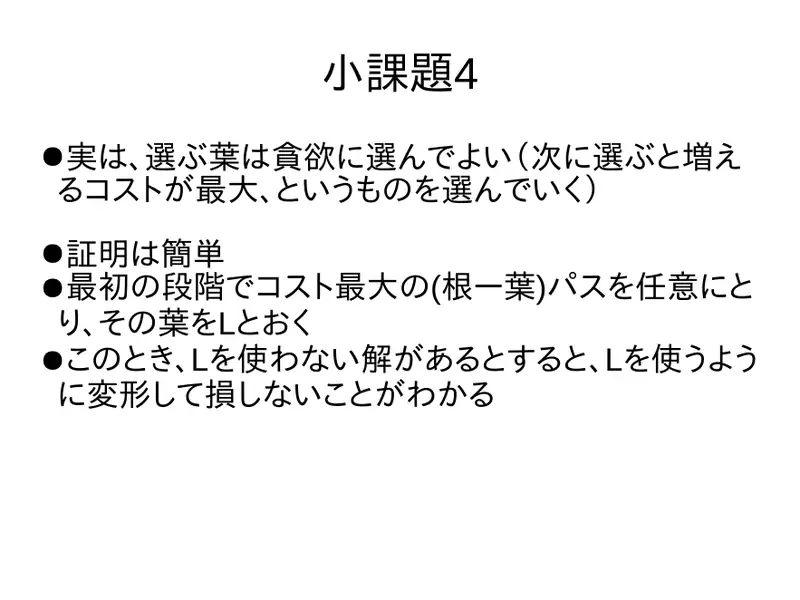
8Greedy (najveći dobitak sljedeći) je točan: najteži put korijen–list $L$ — svako rješenje bez $L$ preradi tako da ga sadrži bez gubitka. -
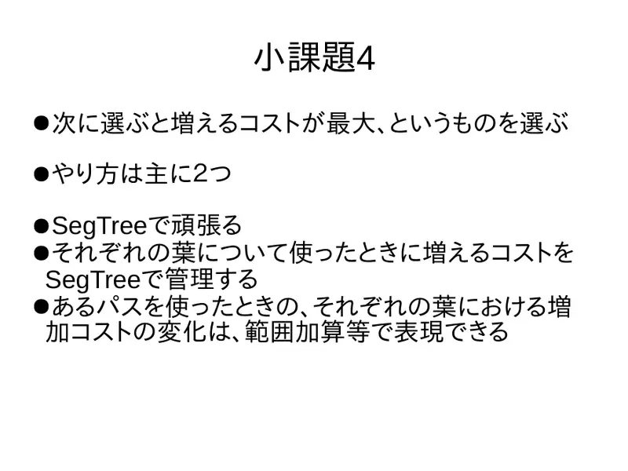
9Način 1: segmentno stablo nad listovima s intervalnim oduzimanjem dobitka. -
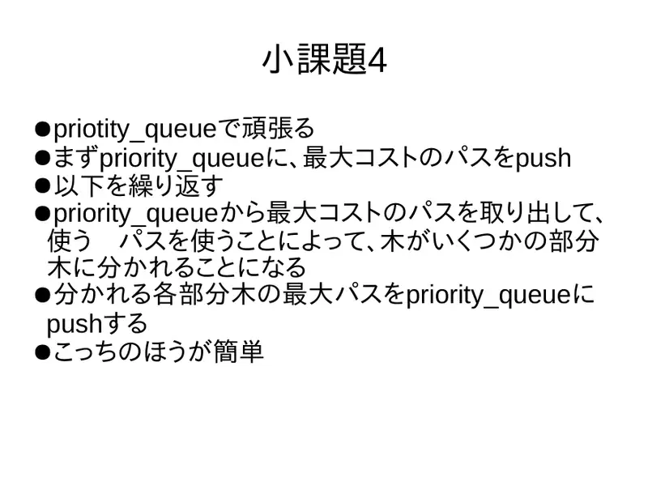
10Način 2: priority_queueputeva: izvadi najteži, put razdvaja stablo na podstabla — ubaci njihove najteže puteve. Jednostavnije. -
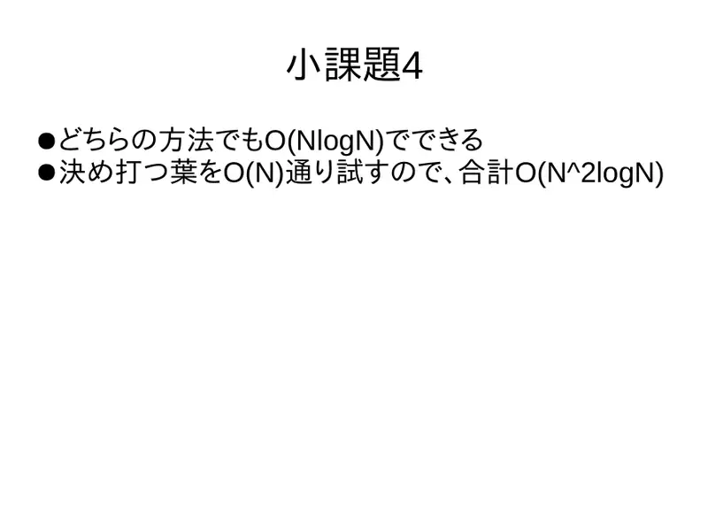
11Oba $O(N\log N)$; s $O(N)$ korijena ukupno $O(N^2\log N)$.
← → tipke ili klik na sliku
Slajd
Podzadatak 5
izvorni slajd 12
-
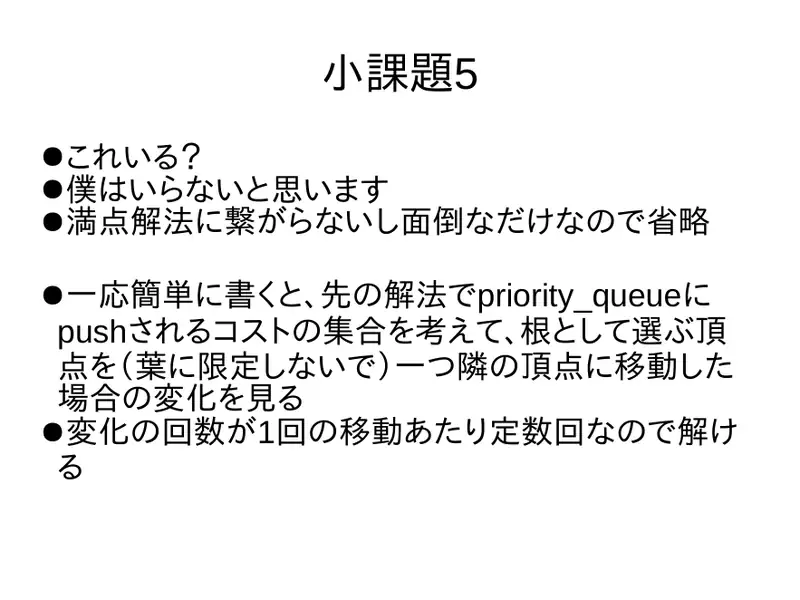
12$Q=1$: nepotreban za 100; skica: pomiči korijen na susjedni vrh i prati promjene skupa cijena u redu ($O(1)$ promjena po pomaku).
Puno rješenje 44 boda
Koraci algoritma
Lema o zajedničkom vrhu
izvorni slajdovi 13–16
-
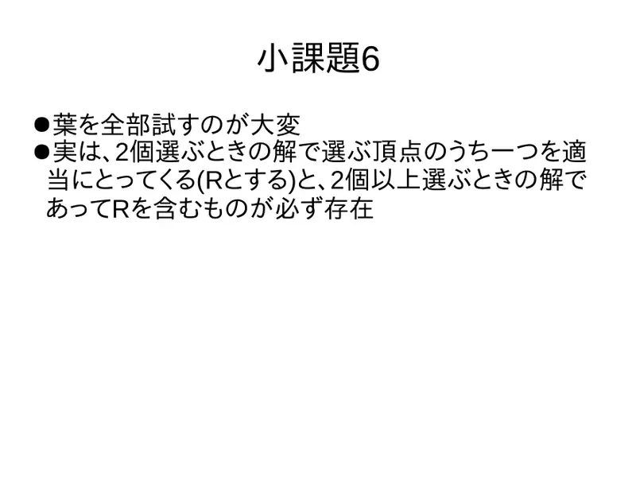
13Ne možemo sve listove; ali jedan vrh $R$ optimalnog rješenja za $E=2$ pripada nekom optimalnom rješenju za svako $E\ge2$. -
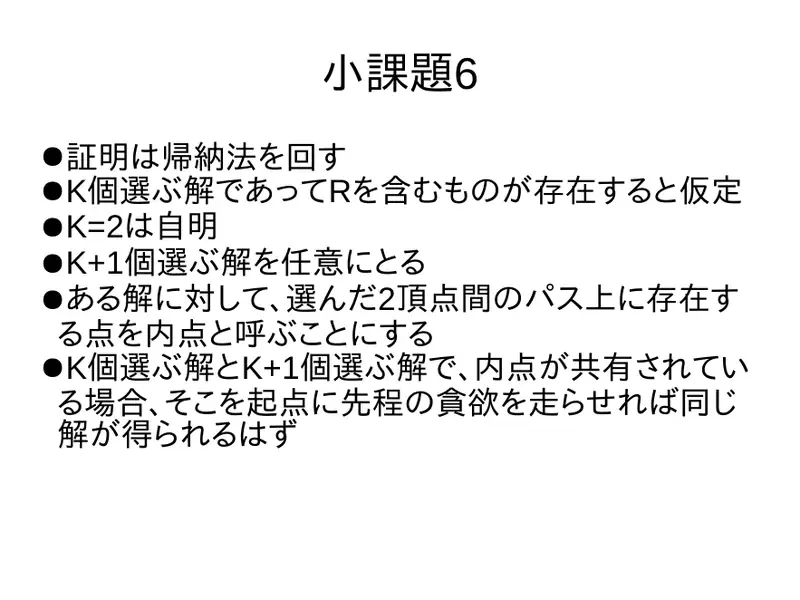
14Indukcija: pretpostavi za $K$; uzmi bilo koje rješenje za $K+1$; „unutarnji” vrh = na putu između odabranih. Ako dijele unutarnji vrh, greedy iz njega daje oboje. -
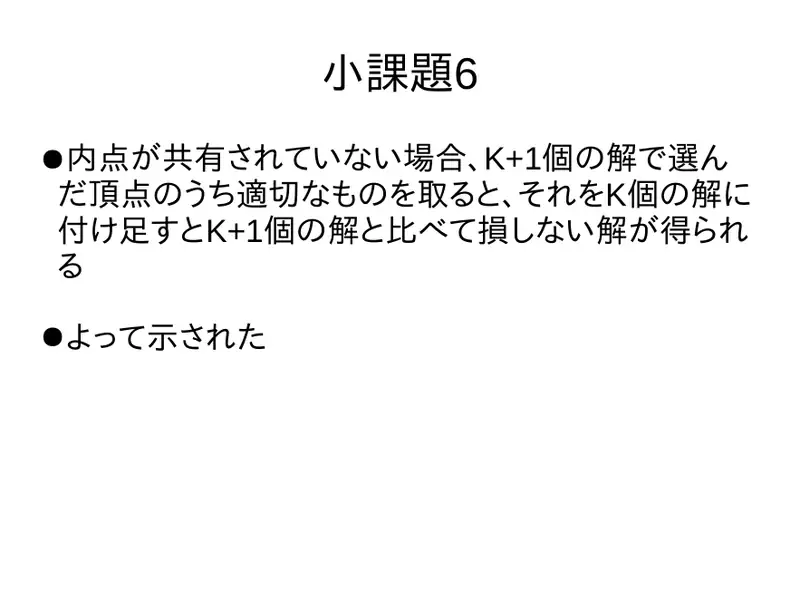
15Ako ne dijele, pogodan vrh iz $K+1$-rješenja dodan $K$-rješenju nije lošiji od $K+1$-rješenja. -
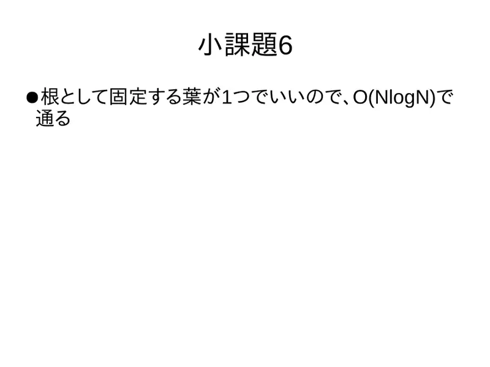
16Jedan korijen ⇒ $O(N\log N)$.
← → tipke ili klik na sliku
Slajd
Statistika
izvorni slajd 17
-
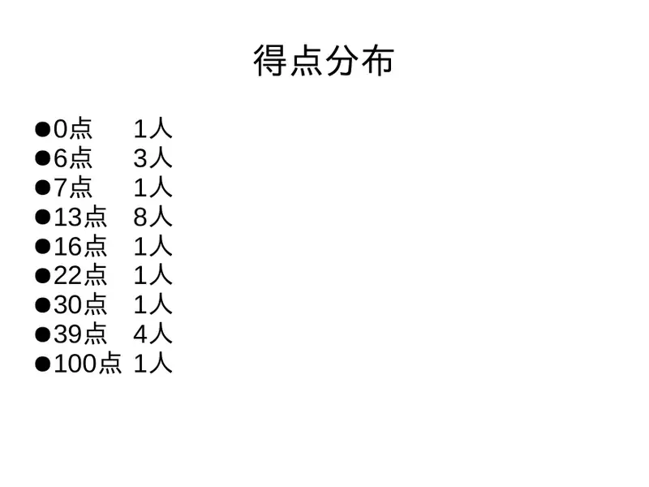
170: 1; 6: 3; 7: 1; 13: 8; 16: 1; 22: 1; 30: 1; 39: 4; 100: 1.
Sažetak
- $E=1$ rerooting; $E=2$ DP po paru ($\mathrm{cost}(u)+\mathrm{cost}(v)-W$)/2.
- Ukorijeni u kraj optimalnog para; greedy po najtežim lancima; prefiksne sume.